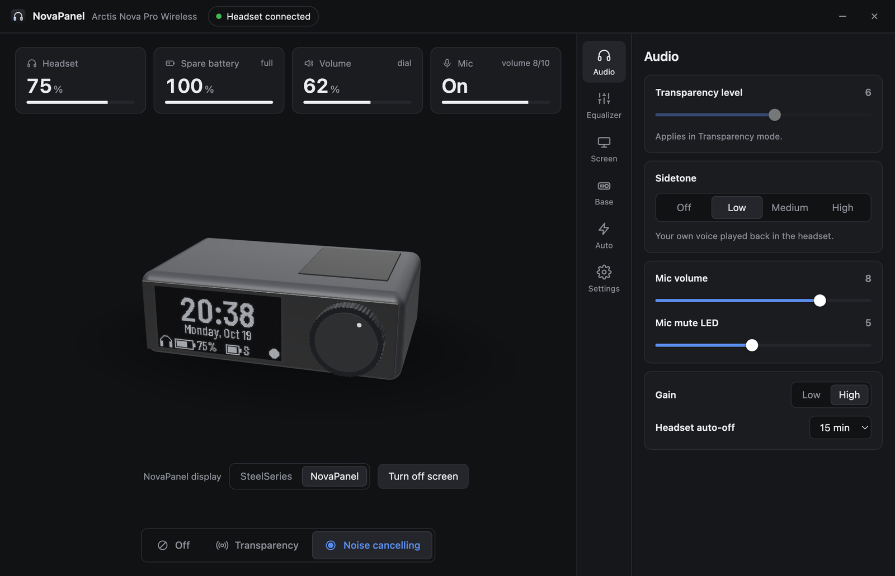
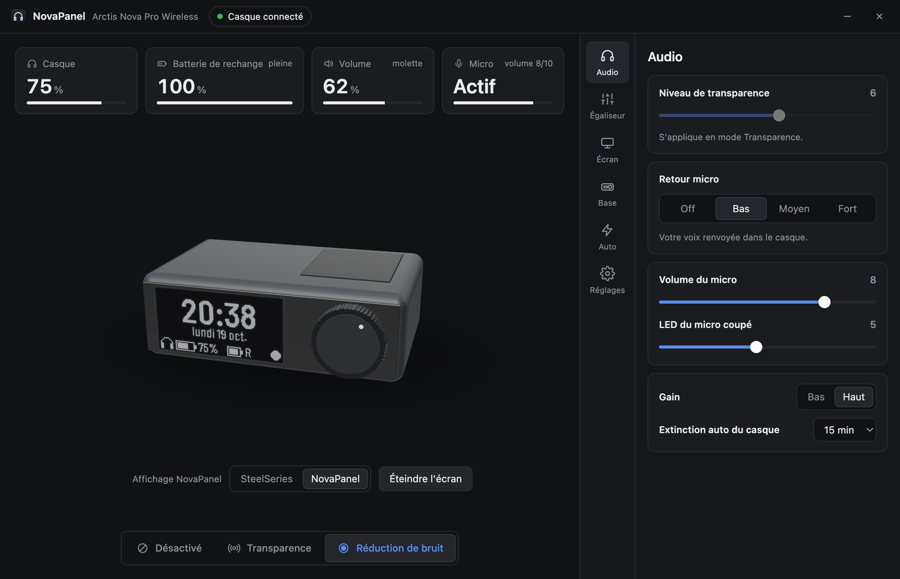
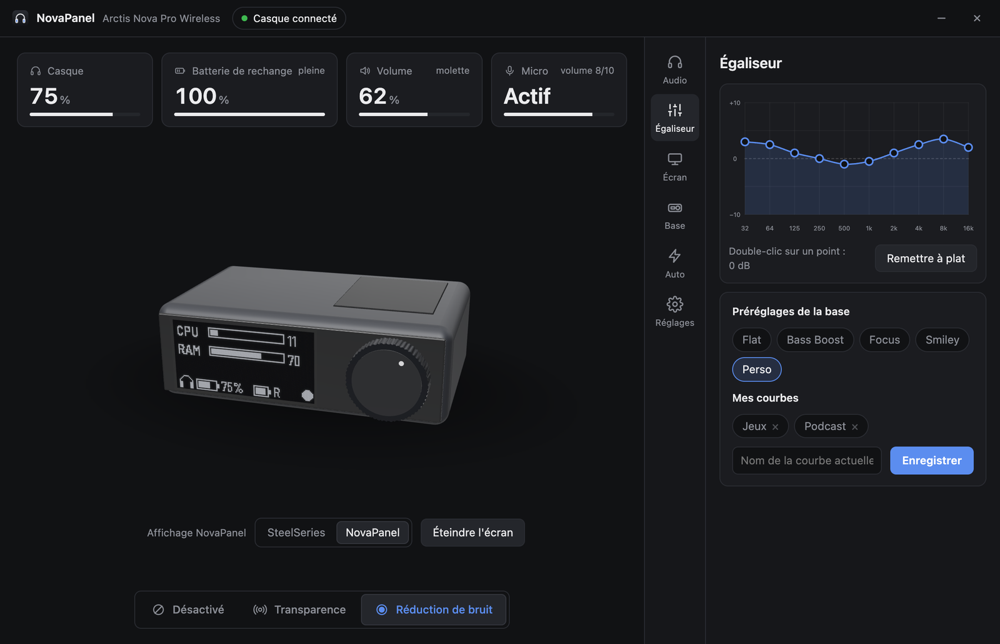
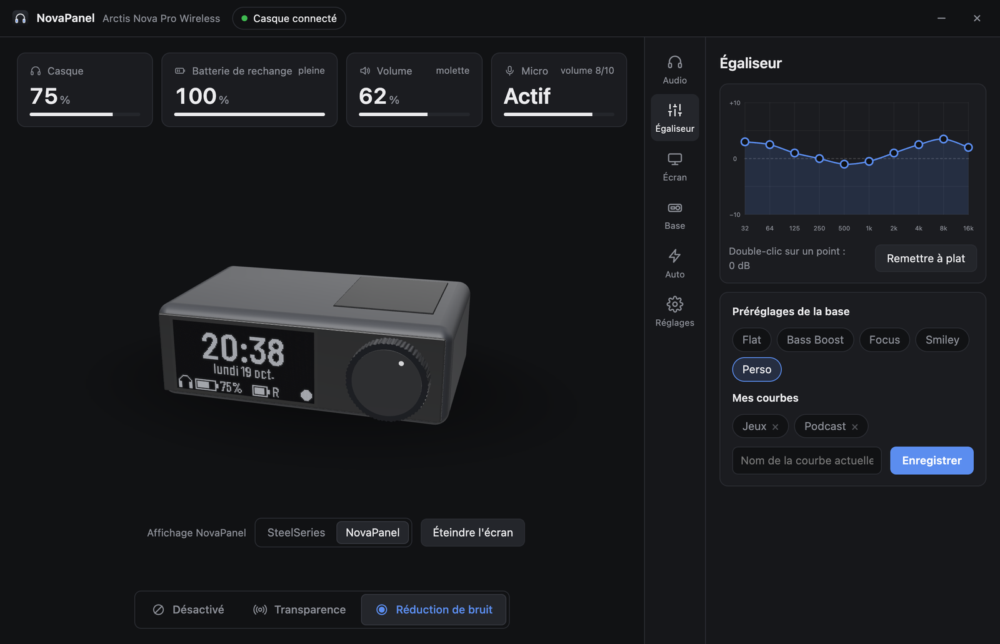
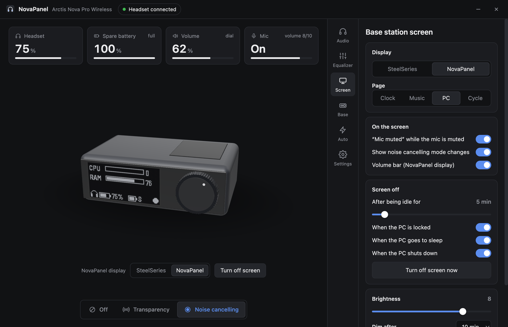
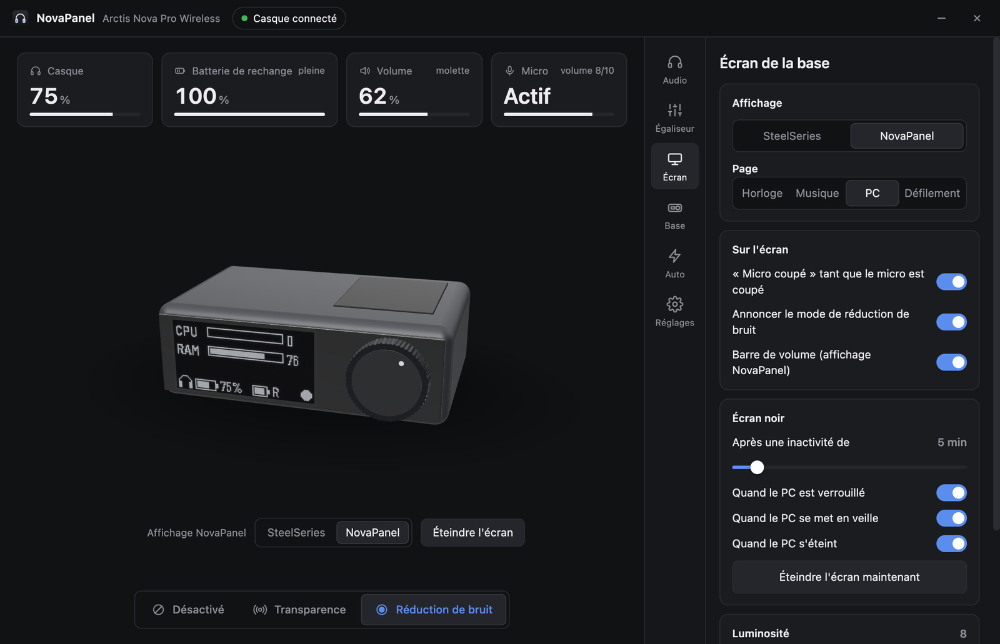

NovaPanel
A lightweight SteelSeries GG replacement for the Arctis Nova Pro Wireless. Noise cancelling, equalizer, base station screen and batteries, without GG in the background.
Un remplaçant léger de SteelSeries GG pour l'Arctis Nova Pro Wireless. Réduction de bruit, égaliseur, écran de la base et batteries, sans GG en arrière-plan.
Free and open source · MIT license · Linux: install from sourceGratuit et open source · licence MIT · Linux : installation depuis les sources


Live demo in your browser, with a simulated base station. Scroll over the base to turn the dial, click the Mic tile to mute.Démo en direct dans le navigateur, avec une base simulée. Faites défiler sur la base pour tourner la molette, cliquez sur la tuile Micro pour le couper.
For people who don't use SteelSeries Sonar. Sonar (game / chat / media mixer, spatial audio) is part of GG and needs it running. If you rely on Sonar, keep GG. NovaPanel replaces everything else.
Pour ceux qui n'utilisent pas SteelSeries Sonar. Sonar (mixeur jeu / chat / média, son spatial) fait partie de GG et en a besoin. Si vous utilisez Sonar, gardez GG. NovaPanel remplace tout le reste.
What it doesCe qu'il fait
HeadsetCasque
Noise cancelling and transparency, sidetone, mic volume, mute LED, gain, auto power-off.
Réduction de bruit et transparence, retour micro, volume du micro, LED, gain, extinction auto.
10-band equalizerÉgaliseur 10 bandes
Drag the curve, use the base presets, save your own curves, switch them per app.
Courbe à glisser, préréglages de la base, courbes perso, bascule automatique par application.
Base station screenÉcran de la base
Black when idle or locked, "mic muted" warning, clock, now playing, CPU / RAM.
Noir quand le PC est inactif ou verrouillé, alerte micro coupé, horloge, musique, CPU / RAM.
BatteriesBatteries
Tray icon with the headset level, low battery alert, spare battery full notification.
Niveau du casque dans la zone de notification, alerte batterie faible, rechange pleine.
ShortcutsRaccourcis
Global hotkeys for noise cancelling mode, black screen and screen pages.
Raccourcis globaux pour le mode de réduction de bruit, l'écran noir et les pages.
No GG neededSans GG
Talks to the base station over USB. Stop GG in one click, bring it back for firmware updates.
Parle à la base en USB. Arrêtez GG en un clic, relancez-le pour les mises à jour du firmware.




Release notesNotes de version
All releases →Toutes les versions →CompatibilityCompatibilité
| Windows | macOS | Linux | |
|---|---|---|---|
| Headset, equalizer, screen, batteriesCasque, égaliseur, écran, batteries | ✓ | ✓ | ✓ |
| Black screen when idle / locked / asleepÉcran noir inactivité / verrouillage / veille | ✓ | ✓ | – |
| Per-app equalizerÉgaliseur par application | ✓ | ✓ | – |
| Now playing, global shortcuts, GG switchMusique en cours, raccourcis, interrupteur GG | ✓ | – | – |
Arctis Nova Pro Wireless base station (USB 1038:12E0; Xbox versions 12E5 / 225D use the same protocol). The wired Nova Pro is not supported.Base de l'Arctis Nova Pro Wireless (USB 1038:12E0 ; les versions Xbox 12E5 / 225D utilisent le même protocole). La Nova Pro filaire n'est pas prise en charge.